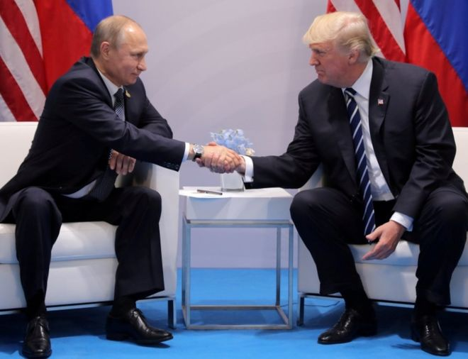
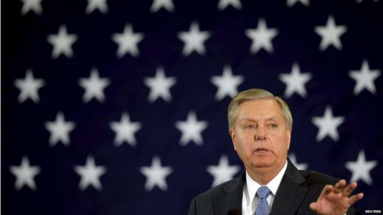

美国将对俄罗斯进行“充满缺陷”的新制裁？
文章来源:http://www.bbc.com/zhongwen/simp/world-40808677
发稿日期:2017/8/2

特朗普与普京上月在德国G20期间举行会谈。 (REUTERS)
尽管将之称为"充满缺陷"，美国总统特朗普周三（8月2日）签署了对俄罗斯的新一轮制裁议案，惩罚俄国涉嫌在去年干涉美国大选。
这一最新生效的法案同时也对伊朗和朝鲜施加制裁。
俄国否认对美国大选进行干预，特朗普也否认因与俄国共谋而赢得选举。被指涉事的一些个人也在新的制裁名单上。一些实体和个人在美国境内的资产将被冻结，
美国公民也将禁止与他们往来。
此前，该法案在参众两院投票时几乎全票通过。若特朗普试图修改该法案，也要通过国会的批准。
虽然签署了法案，但特朗普并不高兴，他指责美国国会过渡行使权力。
在此之前，莫斯科通过驱逐755名美国驻俄外交官报复美国的新一轮制裁。
包括德国在内的一些欧洲国家也对美国的新制裁表达不满。这些国家认为，新制裁也可能惩罚到一些与俄国有商业合作的企业，比如限制它们从美国的银行获得金融服务。
"普京让美国国会更团结"

共和党的参议员格莱厄姆赞扬了这一法案的通过，并说普京让美国的国会更加团结。 (REUTERS)
欧盟委员会主席容克（Jean-Claude Juncker）警告说，新制裁可能对欧盟能源安全利益造成"意外的单方面影响"。
在签署《以制裁反击美国敌人法案》（Countering America's Adversaries Through Sanctions Act）时，特朗普总统还附上了一份声明，将该法案描述为"极度有缺陷的"。
他还指美国国会过度行使其宪法权利。"相较国会，作为总统，我可以与外国达成更好的交易，"他说。
共和党的参议员格莱厄姆赞扬了这一法案的通过，并指出特朗普的选项有限，因为即便他否决，国会议员的投票也会让这一法案通过。
"普京总统做了美国无人能做的事情。他让国会变得更加团结，"格莱厄姆对CNN表示。
俄国的政客批评特朗普未就这一制裁法案与美国国会"较劲"。